Research and creative work spanning organizations, start-ups, evolution and behavior, climate science, and interdisciplinary exploration.研究與創作，橫跨非營利組織、新創、演化與行為、氣候科學及跨領域探索。Trabajos de investigación y creación sobre organizaciones, startups, evolución y comportamiento, ciencias del clima y exploración interdisciplinaria.
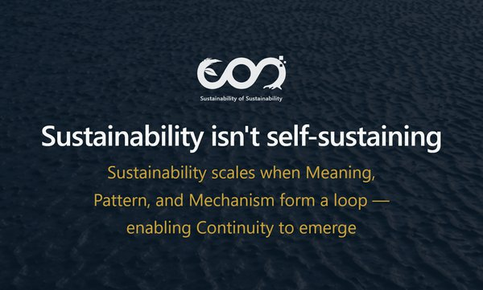
2025 – Now2025 年至今2025 – actualidad
"Sustainability isn't self-sustaining"「永續，不會自己延續」“La sostenibilidad no se sostiene sola”
SOS builds shared meaning, readable patterns, and working mechanisms so sustainability can persist and scale in the real world.SOS 建立共享的意義、可解讀的模式與可運作的機制，讓永續在真實世界中得以延續、擴大。SOS construye significados compartidos, patrones legibles y mecanismos que funcionan, para que la sostenibilidad perdure y crezca en el mundo real.
Meaning · Pattern · Mechanism意義 · 模式 · 機制Significado · Patrón · Mecanismo
2026 – Now2026 年至今2026 – actualidad
"Sensing Nature Across Scales"「跨越尺度，感知自然」“Percibir la naturaleza a todas las escalas”
Building portable and high-throughput systems to capture, digitize, and sense nature across micro, organismal, and landscape scales, in both terrestrial and marine environments.打造可攜式、高通量的系統，在陸域與海洋環境中，從微觀、個體到地景尺度，記錄、數位化並感測自然。Sistemas portátiles de alto rendimiento para registrar, digitalizar y monitorear la naturaleza a escala microscópica, de organismo y de paisaje, tanto en entornos terrestres como marinos.
High-Throughput Digitization · Environmental Sensing · Portable Hardware · Biodiversity Intelligence高通量數位化 · 環境感測 · 可攜式硬體 · 生物多樣性洞察Digitalización de alto rendimiento · Monitoreo ambiental · Hardware portátil · Inteligencia sobre biodiversidad
2023 – 2025
"Preserving Nature, Serving the Future"「保存自然，造福未來」“Preservar la naturaleza, servir al futuro”
Investigating sustainable, energy-efficient materials using a unique dataset derived from hyperspectral imaging and electron microscopy.運用以高光譜影像與電子顯微鏡建立的獨特資料集，研究永續、節能的材料。Investigación de materiales sostenibles y energéticamente eficientes a partir de un conjunto de datos único, obtenido con imágenes hiperespectrales y microscopía electrónica.
Functional Trait Analysis · Spectral Data · Scanning Electron Microscope功能性狀分析 · 光譜資料 · 掃描式電子顯微鏡Análisis de rasgos funcionales · Datos espectrales · Microscopía electrónica de barrido
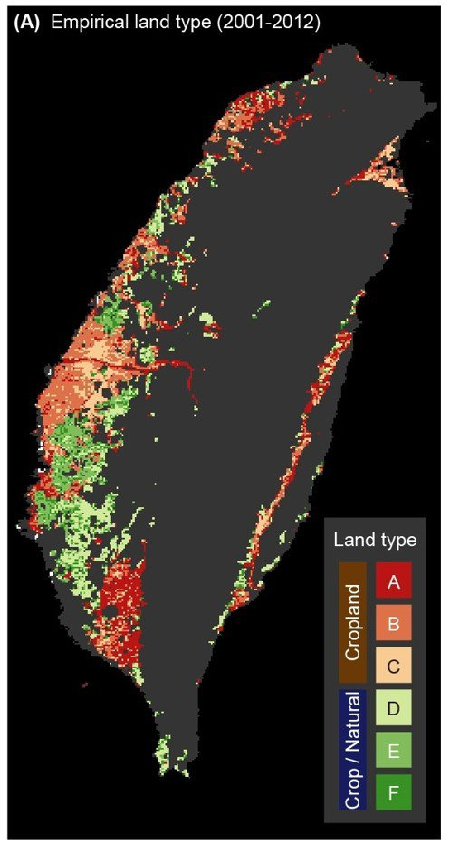
2017 – 2020
"Empowering Agriculture with Data-Driven Insights"「以資料洞察驅動農業」“Datos que impulsan la agricultura”
Applied machine learning and ecological modeling to optimize crop forecasting and disease management, delivering actionable insights for agriculture.運用機器學習與生態建模，改善作物產量預測與病害管理，為農業提供可實際運用的洞察。Aplicación del aprendizaje automático y el modelado ecológico para mejorar la previsión de cosechas y el manejo de enfermedades, con información práctica para la agricultura.
Machine Learning · Ecological Modeling · Crop Production · Scalable Analytics機器學習 · 生態建模 · 作物生產 · 可擴展分析Aprendizaje automático · Modelado ecológico · Producción agrícola · Análisis escalable
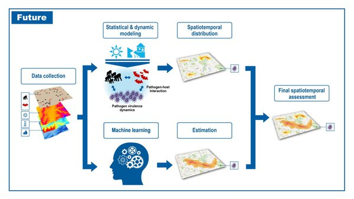
2015 – 2017
"Innovating Pathogen Detection for a Safer Tomorrow"「創新病原檢測，守護更安全的明天」“Innovar en la detección de patógenos para un mañana más seguro”
Leveraging advanced biochips, IoT-enabled sensors, and predictive analytics to revolutionize disease detection and forecast outbreaks with precision.結合先進的生物晶片、物聯網感測器與預測分析，革新疾病檢測方式，並精準預測疫情爆發。Biochips avanzados, sensores conectados (IoT) y análisis predictivo para transformar la detección de enfermedades y anticipar brotes con precisión.
Machine Learning · Biochips · IoT-enabled Sensors · Disease Detection機器學習 · 生物晶片 · 物聯網感測器 · 疾病檢測Aprendizaje automático · Biochips · Sensores IoT · Detección de enfermedades
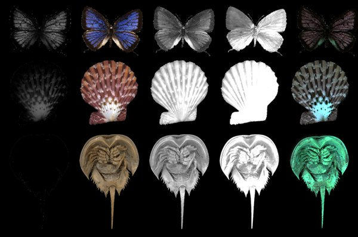
Multispectral Imaging · High-Throughput Systems · Parallel Computing多光譜影像 · 高通量系統 · 平行運算Imagen multiespectral · Sistemas de alto rendimiento · Computación paralela
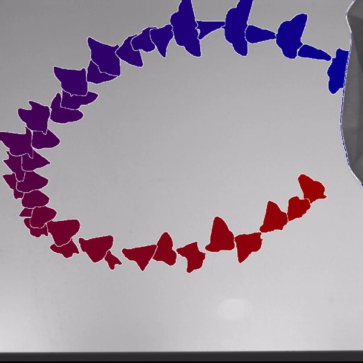
Computer Vision · Signal Processing · Statistical Modeling · Time-Series Analysis電腦視覺 · 訊號處理 · 統計建模 · 時間序列分析Visión artificial · Procesamiento de señales · Modelado estadístico · Análisis de series temporales
Experimental Design · Statistical Modeling · Environmental Data實驗設計 · 統計建模 · 環境資料Diseño experimental · Modelado estadístico · Datos ambientales
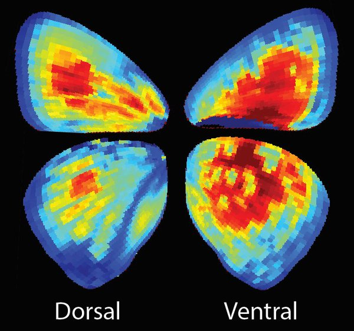
Multispectral Imaging · Evolution · High-Dimensional Data多光譜影像 · 演化 · 高維度資料Imagen multiespectral · Evolución · Datos de alta dimensionalidad
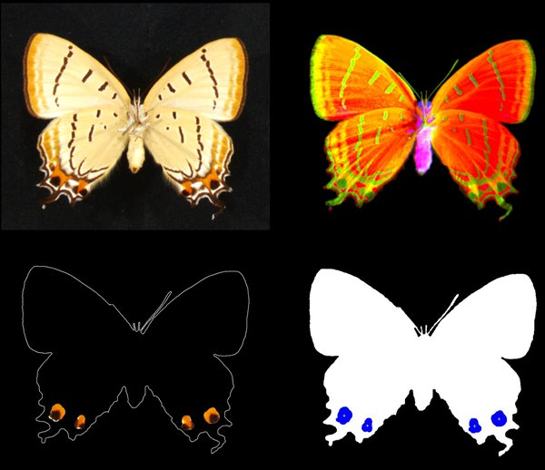
Computer Vision · Deep Learning · Evolutionary Modeling · Data Visualization電腦視覺 · 深度學習 · 演化建模 · 資料視覺化Visión artificial · Aprendizaje profundo · Modelado evolutivo · Visualización de datos
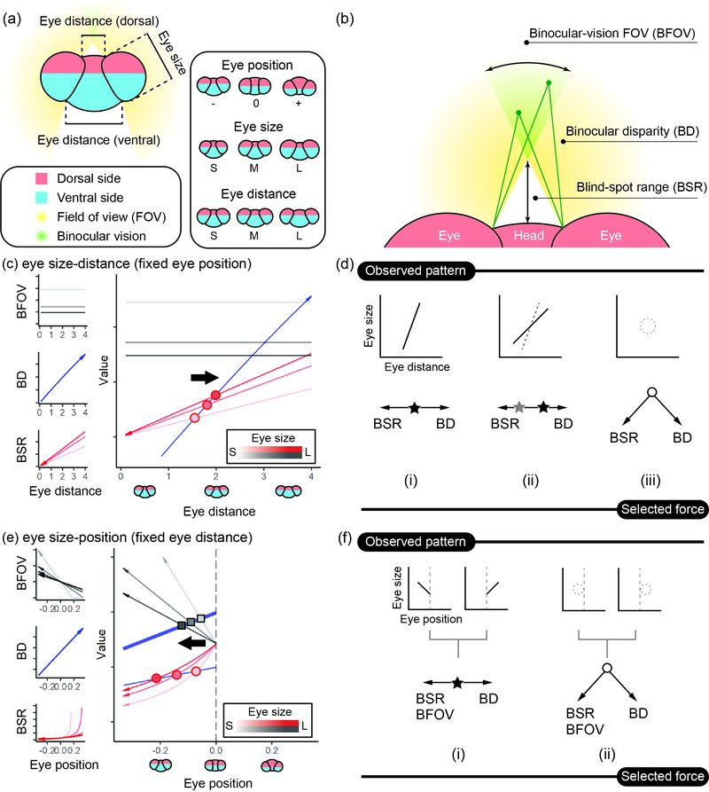
Computer Vision · Visual Ecology · Numerical Modeling電腦視覺 · 視覺生態學 · 數值建模Visión artificial · Ecología visual · Modelado numérico
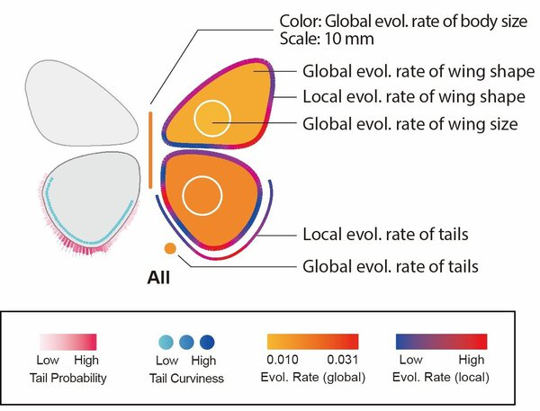
Computer Vision · Evolutionary Modeling · Morphological Extraction電腦視覺 · 演化建模 · 形態特徵擷取Visión artificial · Modelado evolutivo · Extracción morfológica
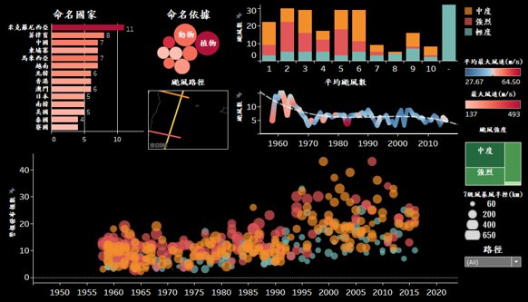
Meteorological Data · Business Intelligence · Tableau氣象資料 · 商業智慧 · TableauDatos meteorológicos · Inteligencia de negocios · Tableau
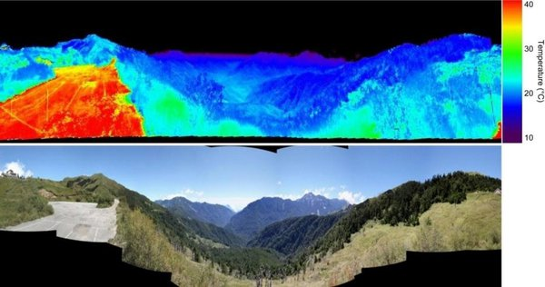
Climate Data · Satellite Image Analysis · Meta Analysis · Causal Inference氣候資料 · 衛星影像分析 · 統合分析 · 因果推論Datos climáticos · Análisis de imágenes satelitales · Metaanálisis · Inferencia causal
Climate Data · Satellite Image Analysis · High-Dimensional Data · Data Visualization氣候資料 · 衛星影像分析 · 高維度資料 · 資料視覺化Datos climáticos · Análisis de imágenes satelitales · Datos de alta dimensionalidad · Visualización de datos
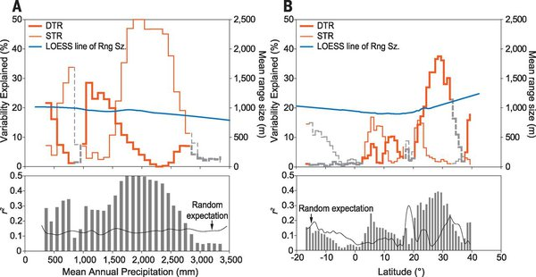
Climate Data · Satellite Image Analysis · High-Dimensional Data · Causal Inference氣候資料 · 衛星影像分析 · 高維度資料 · 因果推論Datos climáticos · Análisis de imágenes satelitales · Datos de alta dimensionalidad · Inferencia causal
Climate Data · Time-Series Analysis · Tree Ring · Stable Isotope氣候資料 · 時間序列分析 · 樹輪 · 穩定同位素Datos climáticos · Análisis de series temporales · Anillos de crecimiento · Isótopos estables
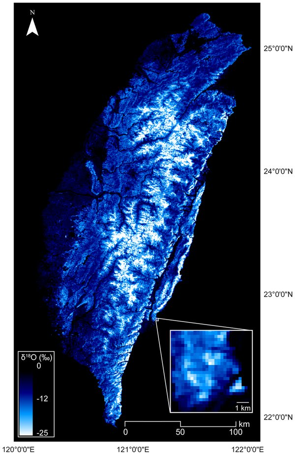
Stable Isotope · Remote Sensing · Geospatial Modeling穩定同位素 · 遙測 · 地理空間建模Isótopos estables · Teledetección · Modelado geoespacial
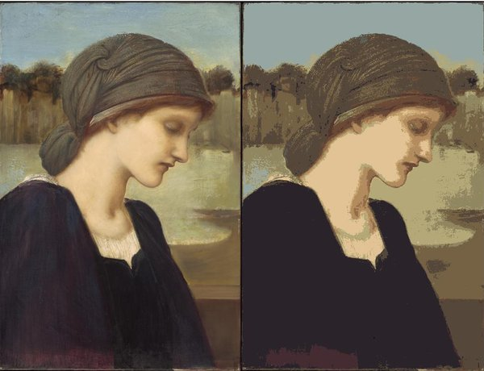
Computer Vision · Business Intelligence · Data Visualization電腦視覺 · 商業智慧 · 資料視覺化Visión artificial · Inteligencia de negocios · Visualización de datos
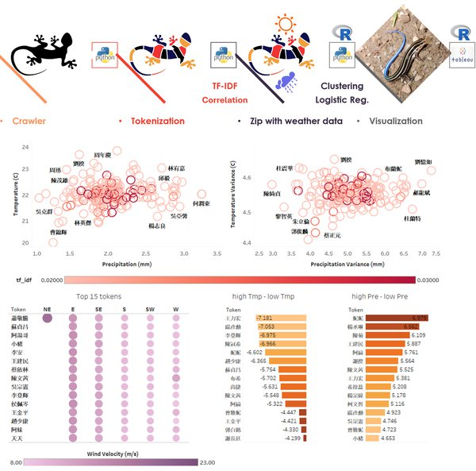
Natural Language Processing · AI · Business Intelligence自然語言處理 · AI · 商業智慧Procesamiento del lenguaje natural · IA · Inteligencia de negocios
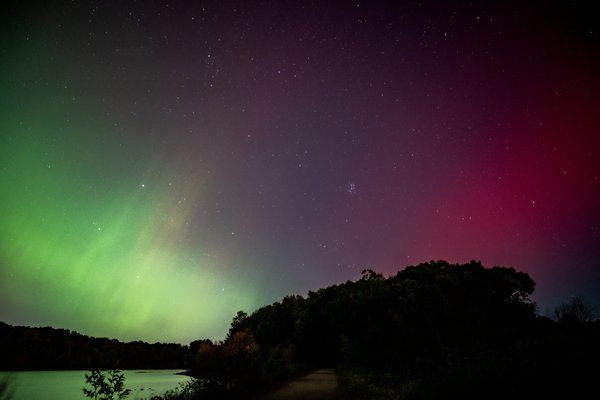
Machine Learning · Space Weather · Predictive Analytics機器學習 · 太空天氣 · 預測分析Aprendizaje automático · Meteorología espacial · Análisis predictivo
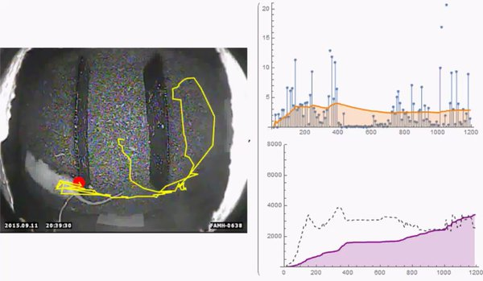
Computer Vision · Behavioral Analysis · Optimization電腦視覺 · 行為分析 · 最佳化Visión artificial · Análisis del comportamiento · Optimización